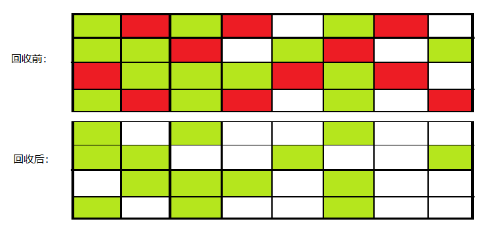
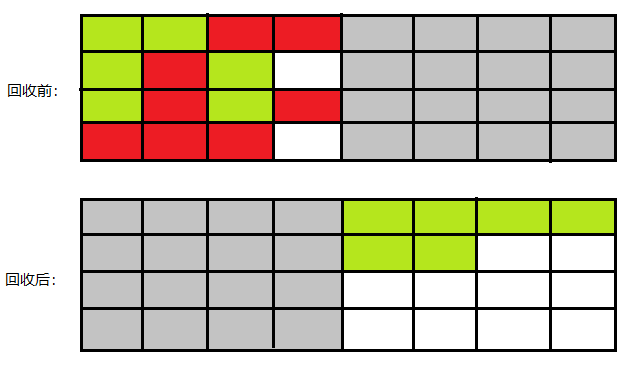
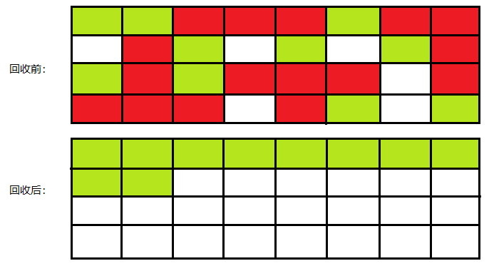

Java不是自动回收吗，为什么还需要管理？
对于Java垃圾回收机制，很多人都认为垃圾收集是Java语言的产物。实际上，早在1960年（Java在1995年开源）Lisp语言就是第一个真正使用内存动态分配和垃圾收集技术的语言。
目前Java的垃圾收集技术也很成熟了，那为什么我们还要去了解Java的垃圾收集机制和内存分配呢？在系统需求不断增加，并发量上升的情况下，就必须对JVM进行管理和调优。那垃圾回收器是如何工作的呢，我们首先大致介绍一下有关垃圾回收的算法。
对象是否存活
垃圾回收的过程中，首先要做的事情就是确定对象“活着”还是“死去”。下面介绍有关判断对象存活的算法，并非垃圾回收算法。
引用计数法
引用计数法的实现简单，效率也很高，大致描述是：给对象添加一个引用计数器，当有地方引用该对象时，引用计数器+1，反之引用失效时，计数器-1。如果计数器为0，则表示当前对象不可再被使用了。这样确实可以判定对象是否“已死”，但如果出现对象互相引用的情况，导致计数器不为0，但两个对象确实已经无法再被访问，于是引用计数算法无法通知gc回收。
1 | public class MyObject { |
1 | [0.032s][info][gc] Using G1 |
可达性分析算法
Java中判定对象是否存活用的就是可达性分析算法，该算法的大致思路：以称为“GC Roots”的节点对象作为起点（根节点），从这些节点向下搜索对象，根节点到对象的路径称为引用链，如果对象到根节点间没有任何引用链，表示此对象不再是可用的，称之为对象到根节点不可达，所以此类对象是会被回收的。
- 可作为GC Roots的对象包括下面几种：
- 栈帧中本地变量表中引用的对象。
- 方法区中类静态属性引用的对象。
- 方法区中常量引用的对象。
- 本地方法栈中JNI引用的对象
垃圾回收算法
上部分介绍了有关垃圾回收前判断对象是否存活的算法，下面介绍有关垃圾回收相关的算法。
标记-清除算法
标记-清除算法是最基础的垃圾回收算法，如名字一样，它分为两个阶段：“标记”和“清除”。首先标记出已死的对象（上部分对对象是否已死的介绍中说到对象如何被判定死亡的），在标记完成后统一对已标记的对象进行清除。它有两个不足的地方，一是在标记和清除两个阶段的效率都不高，其次在清除后会产生大量的内存碎片，如果需要分配较大对象时，无法分配足够连续的内存空间而再次出发另一次的垃圾回收（一般大对象直接进入老年代，这里的较大对象针对本来就该分配在年轻代的对象，只是无法找到足够的连续的内存空间）。

- 红色：可回收 绿色：存活的对象 空白：未使用
复制算法
该算法解决了标记清除-算法带来的内存碎片的问题，它将可用内存按容量划分为大小相等的两块，每次使用其中的一块，当内存用完后就将还存活的对象复制到另一块内存中，然后把之前用过的内存清理掉。
在Java的新生代中，就是采用这种算法进行回收的。它主要将内存分为一个较大内存空间的Eden区和两个较小内存的survivor区，一般虚拟机默认的Eden和Survivor的大小比例为8:1，也就是说每次新生代中可用的内存空间为整个新生代内存空间的90%，其余的10%将被用来作为复制时移动对象的空间。大致过程是：先标记出需要被回收的对象，然后将Eden和其中一个Survivor中存活的对象复制到另一个空的Survivor区，然后清理掉Eden和刚才使用过的Survivor区。如果另外一块Survivor区没有足够的空间放上一次存活的对象，那这些对象将会通过分配担保机制进入老年代。

- 红色：可回收 绿色：存活的对象 灰色：保留区域 空白：未使用
标记-整理算法
复制算法在对象存活率较高时就需要进行更多的复制操作，因此效率将会变低，而且复制算法会浪费一部分内存空间。所以在老年代中，因为对象的存活率较高，且没有额外的内存空间对它进行分配担保，就不能直接选用复制算法。
对此产生了“标记-整理”算法，其过程与“标记-清除”算法一样，唯一不同的是在标记后并不是直接对可回收对象进行清理，而是先将存活的对象移动到内存的一端，然后清理掉边界处以外的内存。

- 红色：可回收 绿色：存活的对象 空白：未使用